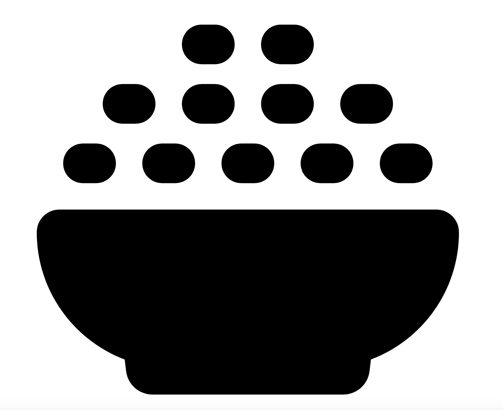

Gulab Jamun
Ready in
30 Mins.

Ingredients
13
Serves
18 Jamun.
30 Mins.
13
18 Jamun.
Mix together water, sugar and crushed cardamoms in a pot.
Boil the syrup until it turns slightly sticky.
Turn off the stove before it goes to a 1 string consistency.
If it reaches a 1 string consistency, then add 2 tbsp of water and mix.
Add rose water and mix. Set aside to keep it hot.
Fluff up the flour in the jar with a fork and then measure correctly.
Mix together flour, milk powder and soda in a bowl. Either sieve it or mix uniformly.
Add ghee to it. Mix well.
In a small bowl, mix together lemon juice or yogurt and 2 tbsp milk.
Pour 1.5 tbsp of this to the flour mixture.
Begin to bring the flour together to make a dough.
If the dough is too dry, add little more milk & curd until you get a smooth dough. Do not add a lot. Use only as needed.
The dough turns sticky. Grease your fingers and make a ball.
The dough must not be soggy. It must hold the shape well and should be smooth without any cracks.
Divide to 14 to 18 equal sized portions. Grease your hands and roll to smooth balls.
They must be smooth without any cracks or lines otherwise you will find many cracks on the gulab jamuns. Keep them covered.
Heat up the pan with ghee or oil on a medium heat.
Also check if the syrup is hot. If it is not hot, heat it up a bit. It must be hot and not very hot.
To check the right temp, you can drop a small piece of dough in the oil.
It must rise slowly without changing its color.
If it rises rapidly then you will need to cool the oil a bit before frying.
When the ghee is just medium hot, add the balls.
Make sure the oil is not very hot else the gulab jamuns will brown without cooking well.
Fry the balls on a medium flame for 1 to 2 mins. Then regulate the flame to low flame & fry until golden. Keep stirring gently to fry them uniformly.
Add them to the hot syrup. Allow them to rest for 3 hours and serve.
Garnish gulab jamun with chopped pistachios.
1 cup milk powder
5 tbsp all-purpose flour (maida)
1 tsp ghee or oil
1 tbsp ghee or oil for greasing
2 to 4 tbsp milk (use more as needed)
1 tbsp curd (yogurt or 3⁄4 tbsp lemon juice)
1 large pinch Baking soda or 1/8 th tsp
Ghee or oil for deep frying
1 tsp pistachios chopped
1 1⁄4 to 1 1⁄2 cups Sugar
1 1⁄2 cup water
4 pods green cardamom or 1⁄4 tsp cardamom powder
1 tsp rose water